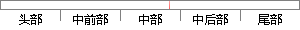

其中，是自变量的偏回归系数，是影响生存时间的所有变量，是基础风险函数（Baseline Survival Function）。
片段位置图

相似结果|
1
原句片段：其中，是自变量的偏回归系数，是影响生存时间的所有变量，是基础风险函数（Baseline Survival Function）。
相似片段 1：(t)为基础风险函数(baselinesurvival function),它是全部协变量X 它和自变量x无...影响生存时间偏回归系数(与多元线性回归模型或Logistic回归模 型中的偏回归系数的...
相似片段 2：表示生存时间; h (t , x ) 称为具有协变量 x1...基线风险函数(baseline hazard function),表示 所有 ...? ? 可以看出 X 的偏回归系数表示 X 每增加一个...
|
※ 片段修改建议 ※
近似词参考：- 其中：此中 个中
- 生存：保存 糊口生涯 生活 生计
- 时间：时候
- 所有：全部
- 基础：根本 根蒂根基 底子
- 风险：危害
系统自动生成语句：此中，是自变量的偏回归系数，是影响保存时候的全部变量，是根本危害函数（Baseline Survival Function）。
注：本片段修改建议为系统自动生成，仅供参考。